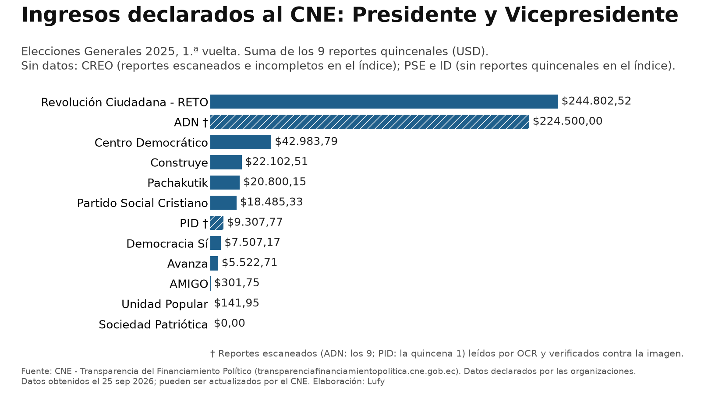
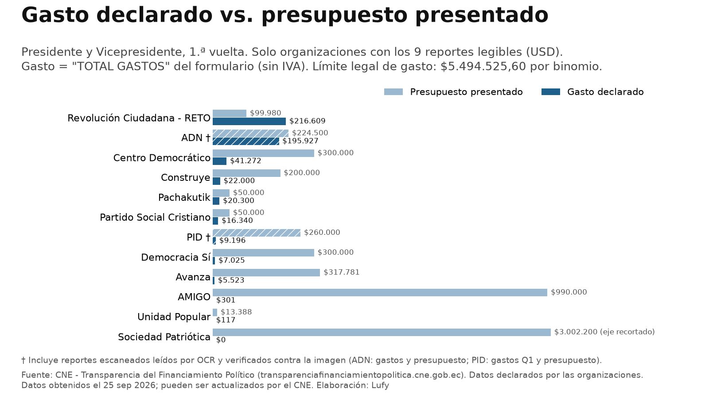
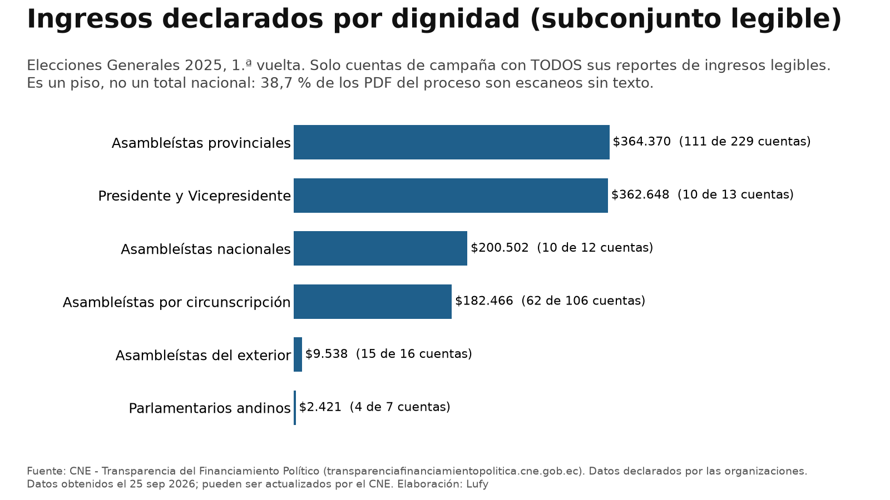

¿Cuánto declararon las organizaciones políticas en la campaña 2025? Los datos del CNE
Revisamos los reportes oficiales de financiamiento que cada organización política declaró al Consejo Nacional Electoral (CNE) para las Elecciones Generales 2025.
Importante: son solo cifras declaradas por las organizaciones al CNE. Este artículo no evalúa si son verdaderas o falsas, y el CNE puede actualizarlas. Datos obtenidos el 25 de septiembre de 2026 del portal oficial transparenciafinanciamientopolitica.cne.gob.ec y verificados de nuevo ese mismo día, sin cambios.
1. Binomio presidencial, 1.ª vuelta: ingresos declarados
Suma de los 9 reportes quincenales de ingresos que cada organización declaró al CNE para Presidente y Vicepresidente.

| Organización | Ingresos | Gasto («TOTAL GASTOS», sin IVA) | Presupuesto presentado (gastos) |
|---|---|---|---|
| Revolución Ciudadana - RETO | $244.802,52 | $216.608,60 | $99.980,00 |
| ADN † | $224.500,00 | $195.926,94 | $224.500,00 |
| Centro Democrático | $42.983,79 | $41.271,52 | $300.000,00 |
| Construye | $22.102,51 | $22.000,00 | $200.000,00 |
| Pachakutik | $20.800,15 | $20.299,90 | $50.000,00 |
| Partido Social Cristiano (PSC) | $18.485,33 | $16.340,28 | $50.000,00 |
| PID † | $9.307,77 | $9.195,62 | $260.000,00 |
| Democracia Sí | $7.507,17 | $7.025,41 | $300.000,00 |
| Avanza | $5.522,71 | $5.522,71 | $317.781,04 |
| AMIGO | $301,75 | $301,41 | $990.000,00 |
| Unidad Popular | $141,95 | $117,30 | $13.387,50 |
| Sociedad Patriótica | $0,00 | $0,00 | $3.002.200,00 |
† ADN (los 9 reportes) y PID (quincena 1 y presupuesto): reportes escaneados, leídos por OCR y verificados contra la imagen.
- CREO: excluido, porque sus reportes están escaneados y el índice del portal está incompleto (faltan quincenas), así que cualquier total sería parcial.
- PSE e Izquierda Democrática: sin reportes quincenales en el índice (solo presupuesto). Por eso el ranking no es exhaustivo.
Fuente: CNE, Transparencia del Financiamiento Político. Cifras declaradas por las organizaciones; datos obtenidos el 25 de septiembre de 2026.
2. Gasto declarado frente al presupuesto y al límite legal
El gasto declarado («TOTAL GASTOS», sin IVA) de las 12 organizaciones con reportes completos (incluidas ADN y PID) suma $534.609,69, frente a $596.455,65 de ingresos declarados.
El límite legal de gasto por binomio presidencial fue de $5.494.525,60 (boletín del CNE). El mayor gasto declarado (Revolución Ciudadana - RETO, $216.608,60) equivale al 3,94 % de ese límite.
Contexto: según el CNE, el límite de gasto no cubre la publicidad en prensa, radio, televisión, vallas ni medios digitales. Esa publicidad se financia con el Fondo de Promoción Electoral, que administra el CNE (boletín del CNE; copia archivada). Por eso los montos declarados por las organizaciones no reflejan toda la propaganda de la campaña.

Fuente: CNE, Transparencia del Financiamiento Político. Cifras declaradas por las organizaciones; datos obtenidos el 25 de septiembre de 2026.
3. Segunda vuelta
En la 2.ª vuelta (proceso 133), Revolución Ciudadana - RETO declaró ingresos por $248.434,82 y gasto («TOTAL GASTOS», sin IVA) por $222.309,91, en 2 reportes quincenales. ADN declaró un gasto de $116.563,11 en 2 reportes (leídos por OCR y verificados contra la imagen); el índice del portal no lista sus reportes de ingresos de esa vuelta.
Fuente: CNE, Transparencia del Financiamiento Político. Cifras declaradas por las organizaciones; datos obtenidos el 25 de septiembre de 2026.
4. Todas las dignidades: por qué no hay un total nacional
No es posible dar un total nacional confiable de la 1.ª vuelta: 2.497 de 6.457 PDF (38,7 %) son escaneos sin texto. En las 212 cuentas de campaña que tienen todos sus reportes de ingresos con texto legible, los ingresos declarados suman $1.121.944,70. Es un piso, no un total.

Fuente: CNE, Transparencia del Financiamiento Político. Cifras declaradas por las organizaciones; datos obtenidos el 25 de septiembre de 2026.
Nota metodológica
- Corpus: 6.465 PDF del portal del CNE: 6.457 del proceso 132 (1.ª vuelta, 406 cuentas de campaña) y 8 del proceso 133 (2.ª vuelta). Texto extraído del PDF.
- Sin doble conteo: cada reporte quincenal cubre solo su quincena. Lo comprobamos: el valor de cada reporte coincide con la columna de su quincena en la tabla resumen, y la suma de las 9 quincenas coincide al centavo con el resumen de la quincena 9 en las organizaciones presidenciales con texto.
- Gasto: usamos el rótulo oficial del formulario, «TOTAL GASTOS», que es el valor sin IVA.
- Escaneos: los 24 escaneos presidenciales de ADN y PID se leyeron con OCR y cada total se verificó contra la imagen y con chequeos cruzados.
- Exclusiones: 2.476 escaneos sin texto y 153 con OCR no confiable o sin total. El piso por dignidad (sección 4) usa solo reportes con texto.
- Verificación: una muestra aleatoria de 20 cifras se comprobó a mano (20 de 20 correctas). El 25 de septiembre de 2026 volvimos a descargar los 251 reportes presidenciales: eran idénticos byte a byte, sin reportes nuevos ni retirados.
- Datos personales: no revisamos ni publicamos el detalle de aportantes ni de proveedores. Solo usamos las filas de totales.
- Limitaciones: el CNE puede cargar o actualizar reportes después de la fecha de corte. Las cifras leídas por OCR conviene contrastarlas en el portal.
Fuentes
- Consejo Nacional Electoral, Transparencia del Financiamiento Político (reportes de ingresos, gastos y presupuesto; procesos 132 y 133). Consultado el 25 de septiembre de 2026.
- CNE, «CNE aprobó el límite del gasto electoral de los comicios 2025» (17 de agosto de 2024).
- CNE, «CNE aprobó el Fondo de Promoción para las Elecciones Generales 2025» (30 de diciembre de 2024); copia en Internet Archive.
Verifica los datos tú mismo en el portal oficial del CNE. ¿Encontraste un error? Escríbenos desde Ko-fi y lo corregimos en público (política de correcciones).
Lufy es un proyecto independiente. Si este trabajo te sirve, puedes apoyarlo en Ko-fi o leer nuestro libro.